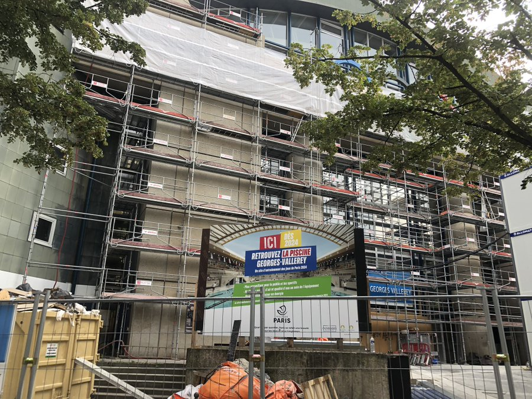

Courrier Olympique

Le handicap est un sujet qui touche toute la France avec 20% de la population atteinte d’un handicap moteur ou dit visible.

DEBUNKAGE
Ces 20% correspondent aux personnes atteintes d’un handicap moteur dit “visible” sur l’ensemble de la population handicapée qui représente 11.2% de la population de plus de 15 ans en France 2023. De ce fait, il y a une manipulation d’information: c’est le biais de sélection.
Néanmoins, la France semble peu ouverte sur ce problème national avec seulement 88 établissements d'accueil handicap en région parisienne . En revanche, depuis le dépôt de la candidature pour accueillir les JO Paralympique 2024, nous ne pouvons que constater une augmentation ahurissante du nombre d'établissements d'accueil pour handicapé. En effet, en cette fin d’année 2023, on peut maintenant trouver plus de 5000 établissements d'accueil pour handicapé dans toute la France.
DEBUNKAGE
Ici, la formulation ainsi que le vocabulaire utilisé donnent une impression d’augmentation, cependant, il y a simplement 88 établissements à Paris ( et non la région ) et 5 136 établissements d’acceuil d’handicapé en France. C’est l’effet de cadrage.
Cette initiative d’avancement social est notamment motivée par le divertissement procuré par les jeux Paralympiques. En effet, d’après un sondage d'Odoxa 59% des Français apprécient autant regarder les JO que les jeux paralympiques.
DEBUNKAGE
C’est en fait 49% des Français comptent regarder pour les JOP et 59% les JO , il s’agit donc d’un biais de sélection.
De ce fait, Paris se doit d’être accessible à tous, avec son projet de rénovation qui a permis de créer 17 Quartiers d'Accessibilité Augmenté (QAA) avec pour but de garantir l’accueil des publics en situation de handicap. Pour cela, de nombreux travaux sont nécessaires avec un budget de 500 milles euros par QAA, soit 8,5 millions d’euros.
DEBUNKAGE
Bien que le projet de QAA soit une réalité, en fin 2023 aucun QAA n’a visiblement pu voir le jour. Par exemple, la rénovation de l’avenue Gambetta a coûté 13 millions d’euros. Celui-ci semble encore en rénovation.

Béatrice Lecouturier, élu Conseil de Paris affirme qu’ « Une ville inclusive est une ville accessible » tout en annonçant que 3 QAA doivent voir le jour en 2023.
DEBUNKAGE
Argument d’autorité et contraste avec la réalité: Mme. Lecouturier est élu au conseil de Paris, cela rajoute une forme de crédibilité mais n’a pas énormément d’affiliation avec le sujet du handicap.
C’est ainsi que la ville de Paris s’avère prête à accueillir les touristes handicapés tout en créant des infrastructures durables pour la population française.